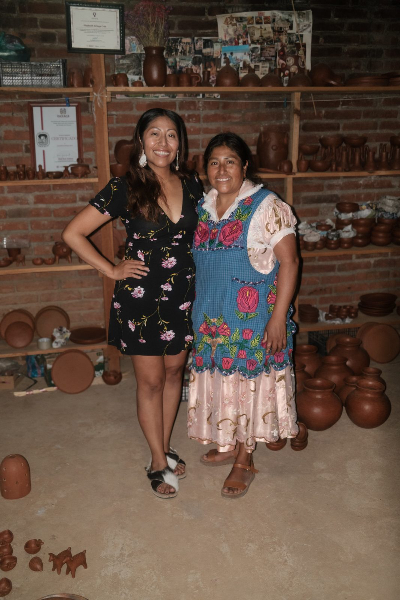
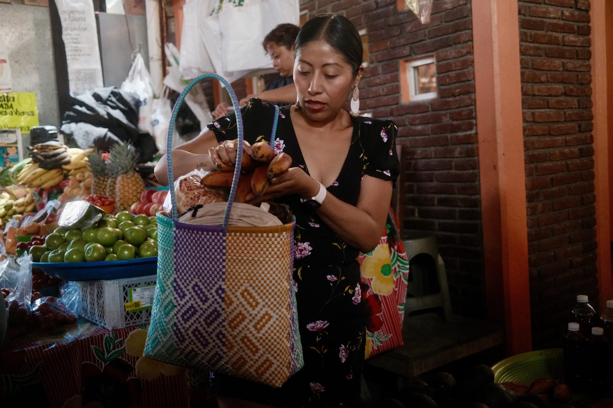
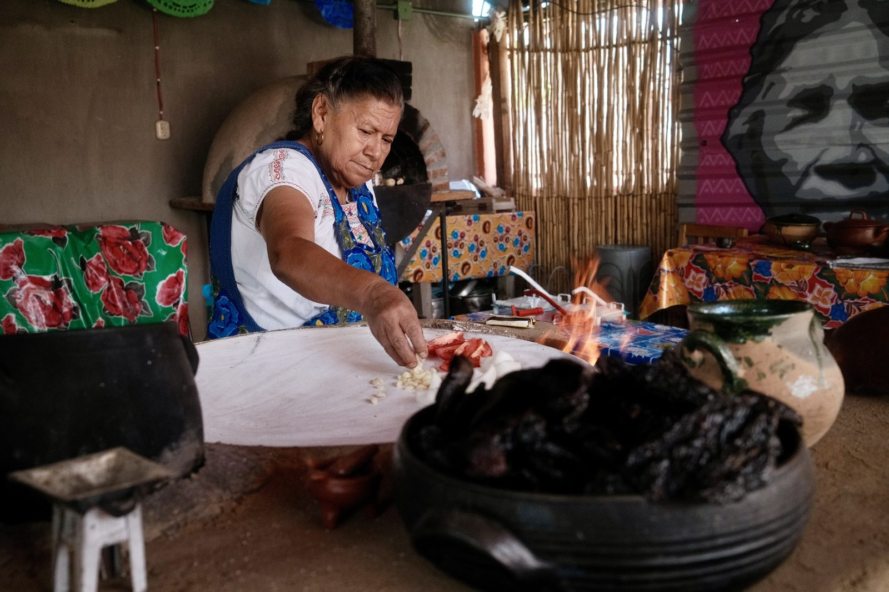

Tlacolula Valley, MX
Featured
Food & Drink
Grinding Mole on a 100-Year-Old Metate
May 24, 2025
8 min read
My arms gave out before the chiles did. A cooking class in the Tlacolula Valley where the molino is your shoulders and the mole negro tastes like the work you put into it. Doña and her daughters have been doing this their whole lives. I lasted eleven minutes.
Read Entry

San Marcos Tlapazola, MX
May 22, 2025 · People
The Potters of San Marcos Tlapazola
Red clay, no wheel, no kiln you would recognize. The women of this village have been making barro rojo for generations, and every piece passes through at least six hands.
Read Entry
May 25, 2025 · Food & Drink
Masa Comes in Colors Now (It Always Did)
Green from hierba santa, pink from beet, purple from maíz morado. A heart-shaped bowl of proof that corn is a whole universe.
Read Entry

Tlacolula Market, MX
May 27, 2025 · On the Road
Shopping Like a Local Is a Skill You Earn
The woven bag, the right vendor, the correct number of plátanos. Market fluency takes years. I'm working on it.
Read Entry
 Oaxaca, MX
Oaxaca, MX
May 23, 2025 · City Notes
Pan de Yema and the Tongs of Authority
The bread ladies of Tlacolula run a tight ship. Point at what you want, nod, receive. Do not touch the bread yourself. This is the law.
Read Entry

Tlacolula Valley, MX
May 21, 2025 · Food & Drink
The Comal Never Stops
Tomatoes, onion, garlic, corn. Everything goes on the clay before it goes in the pot. Watching her work was the best cooking lesson of the trip.
Read Entry
 Oaxaca, MX
Oaxaca, MX
May 26, 2025 · City Notes
The Corn Mural House
Somewhere in the valley, somebody painted their whole facade like talavera tile and put a maíz criollo mural in the middle of it. This is why you walk.
Read Entry